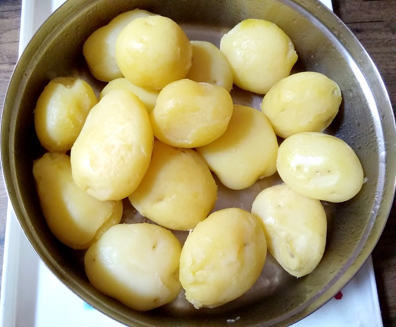
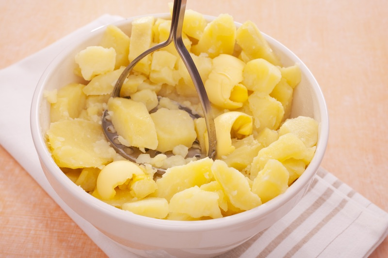
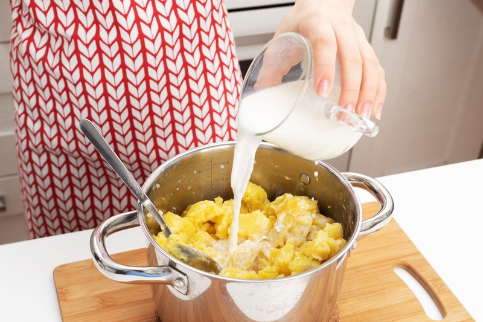

Cook your potato in cold, salted water until it is soft and tender enough for mashing
Use a hand held masher to mash your fully cooked potato until the texture is smooth and creamy
Add milk and/or cheese and mix together to further elevate its creamy flavor
Enjoy your mashed potato!!